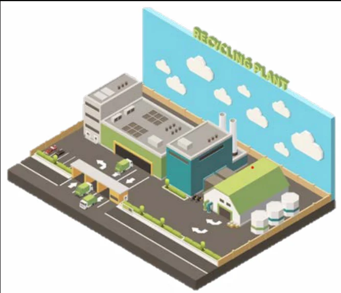
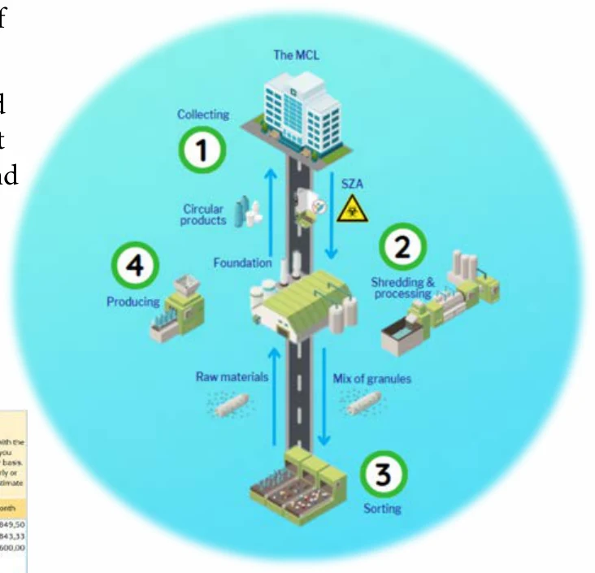
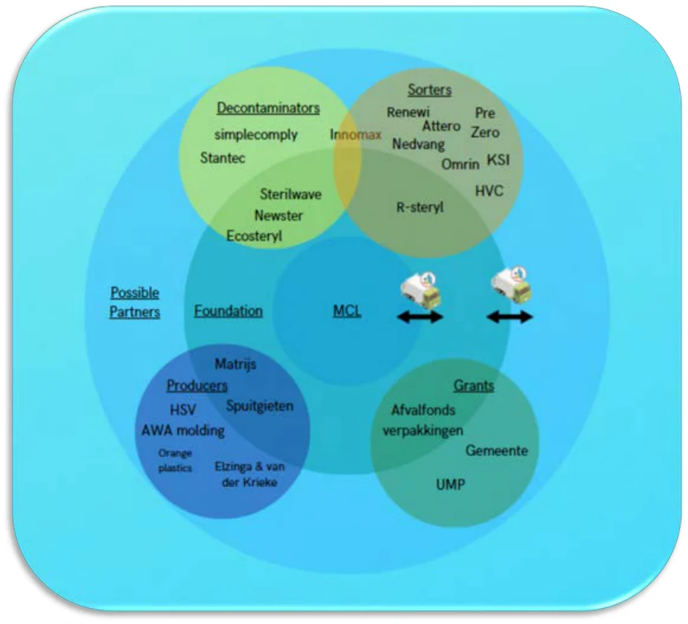

03 / Circular systems
Circular Healthcare
A proposed foundation connecting the collection, cleaning, sorting and reprocessing of contaminated hospital plastics in a single circular system.

Reframing the brief
The initial assignment explored a product made from a small fraction of recycled hospital plastic. I broadened the question: what could happen to the rest of the waste? This shifted the project from a single object towards the infrastructure and business model needed for circular healthcare.

Designing the system
I mapped potential partners across collection, shredding, cleaning, sorting and production. The proposed foundation brings these processes into one location, reducing transport between separate companies and connecting waste handling to the production of new products.

A foundation for circularity
The outcome is a service and business-model proposal, supported by a process model and stakeholder analysis. It considers how a more complete recycling chain could replace incineration. The portfolio presents a designed concept, rather than evidence of an operating recycling facility.